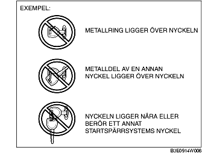

FÖRORD [STARTSPÄRRSYSTEM]
B3E090201077W01
• Diagnos av funktionsfel görs automatiskt när tändingsnyckeln vrids från LOCK (ACC) till ON (START).
• Om diagnosen visar att det finns ett funktionsfel tänds säkerhetslampan och visar en DTC-kod, och PCM-modulen sparar DTC-koden. DTC-koder som sparas i PCM-modulen kan verifieras med WDS eller motsvarande.
• DTC-koder för startspärrsystemet som sparas i PCM-modulen raderas när tändningsnyckeln vrids från läge ON till LOCK (ACC).
• Vissa DTC-koder kan bara verifieras med WDS eller motsvarande, inte säkerhetslampan.
• PID-/dataövervakningsfunktionen kan användas för att verifiera antalet nycklar som registrerats för ett visst fordon.
• Om DTC-koderna inte visas och motorn inte startar, utför följande symptomfelsökning:
-
- NR 3 MOTORN GÅR EJ RUNT [ZJ, Z6]
-
- NR 3 MOTORN GÅR EJ RUNT [LF]
-
Försiktigt
-
• Använd alltid WDS eller motsvarande för att verifiera DTC-koderna även om DTC-koderna verifieras av säkerhetslampans display. Om det finns ett fel i säkerhetslampan är det möjligt att en DTC-kod inte visas korrekt.
-
• Använd alltid WDS eller motsvarande för att verifiera DTC-koder eftersom det finns vissa DTC-koder som inte kan verifieras med säkerhetslampan.
-
• Om någon av följande komponenter rör vid eller är nära nyckelns huvud kan signalkommunikationen mellan nyckeln och fordonet försämras, vilket kan innebära att motorn inte startar. Starta inte motorn om någon av följande komponenter rör vid eller är i närheten av nyckelns huvud.
-
- Något metallföremål
-
- Reservnycklar eller nycklar till andra fordon som har startspärrsystem
-
- Elektronisk utrustning eller kreditkort eller andra kort med magnetremsor

-
Observera
-
• Om flera DTC-koder känns av vid funktionsfeldiagnosen kommer bara den DTC-kod med lägsta numret att visas av säkerhetslampan. Det kan alltså finnas flera. PCM-modulen sparar flera DTC-koder samtidigt.
-
• Om två eller flera DTC-koder för startspärrsystemet verifieras, reparera först den del som indikerats av säkerhetslampan. Efter reparation av en plats, vrid tändningsnyckeln från LOCK till ON och utför en funktionsfeldiagnos på startspärrsystemet.